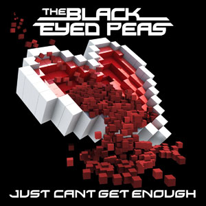

Welcomes to Tunes.
THE site for current/mainstream music.
This Weeks Highlights
Adele Dominates the Charts!
2008 Critics Choice BRIT Award Winner "ADELE" has taken the charts by storm
and now sits at number 1 on both UK Singles and Album Charts.
Knocking Nicole Scherzinger's 'Don't Hold Your Breath' off the topspot, the 22 year-old
swept in with her latest single 'Someone Like You' and stole the position.
Her second studio album, 21, has sat comfortably at number one in the UK Album
charts for the past nine weeks, equalling Madonna's 1990 compilation 'The Immaculate Collection'
for most consecutive weeks at number one by a solo female artist.

The Black Eyed Peas Release New Single
The Black Eyed Peas have returned with their new single, enititled 'Just Can't Get Enough'.
The song is their second single off their sixth studio album 'The Beginning', and has
already hit the number one spot in the US, sitting at number three in the UK.
This follows their first single, 'The Time (Dirty Bit)' which reached the number one spot.
Will this song be as successful? That remains to be seen.
For more Music News, get the lowdown on our Music News page.